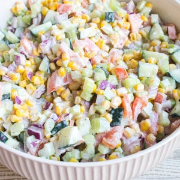

Vegetable Salad

Description
Fresh Vegetable Salad is a quick & easy recipe that's loaded with veggies
and tossed in a creamy dressing making it the perfect side dish for
potlucks!
Ingredients
Dressing
- ½ cup sour cream
- ¼ cup mayonnaise
- 2 tablespoons white wine vinegar
- 2 tablespoons jalapeno seeded and finely diced
- 1 teaspoon celery seed
- ¼ teaspoon salt
- ¼ teaspoon black pepper
Salad
- 4 ears yellow corn cleaned, cooked, cooled, and cut off the cob
- 2 large tomatoes seeded and chopped
- 6 stalks celery chopped
- 1 cucumber chopped
- ½ red onion finely chopped
Steps
-
In a medium bowl, whisk together sour cream, mayonnaise, vinegar,
jalapeno, celery seed, salt, and pepper until smooth. Set aside to let
the flavors marry while you prepare the veggies, at least 5 minutes.
- In a large bowl, mix all the chopped vegetables together.
-
Pour dressing over vegetables and gently mix together until well
combined.
-
Serve Immediately or cover and store in the fridge for up to 3 hours.